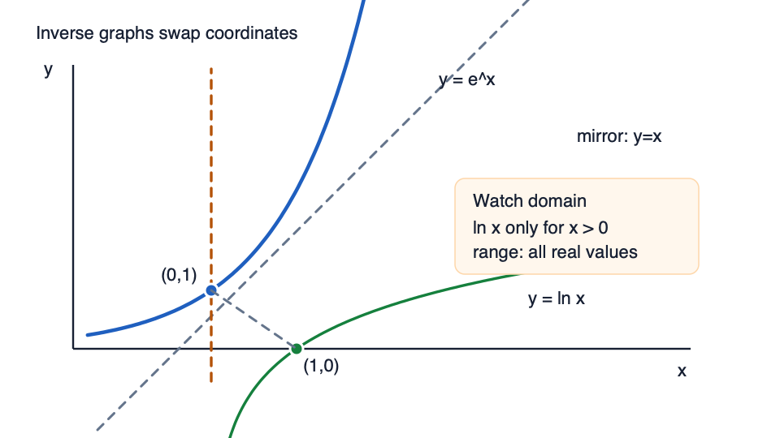

You know 34=81. To use logarithms, write the same relationship with the exponent as the output.
Rewrite 34=81 as a logarithmic statement.
Not completed
Try a similar checked question
Rewrite 52=25 as a logarithmic statement.
Exam transfer
Exam transfer: when an unknown is in an exponent, translate to a logarithmic statement with the same base. The trap is swapping base and input; write the log form before solving.
Step 2 of 17
Product law need
A solving step contains lnx+ln5. Keeping two logarithms makes the next equation harder than it needs to be.
Condense lnx+ln5 into one logarithm.
Not completed
Try a similar checked question
Condense ln2+lnx into one logarithm.
Exam transfer
Exam transfer: when an equation has a sum of logs on one side, combine them into a product before comparing arguments. Produce one logarithm, not a false ln(a+b) shortcut.
Step 3 of 17
Quotient law need
A log expression contains subtraction: lnx−ln3. The sign tells you how to combine the inputs.
Condense lnx−ln3 into one logarithm.
Not completed
Try a similar checked question
Condense ln(2x)−ln5 into one logarithm.
Exam transfer
Exam transfer: in log equations, quotient-law steps often create the single argument you can compare on both sides.
Step 4 of 17
Power law need
Before combining logs, the coefficient in 3lnx must become a power inside the logarithm.
Rewrite 3lnx as one logarithm.
Not completed
Try a similar checked question
Rewrite 2ln(x+1) as one logarithm.
Exam transfer
Exam transfer: move coefficients inside as powers before applying product or quotient laws.
Step 5 of 17
Condense logs before solving
You need to solve ln(x−1)+ln2=ln10. The useful first move is to make one logarithm on the left.
After condensing, what equation between inputs should be solved?
Not completed
Try a similar checked question
For lnx+ln3=ln12, what input equation follows after condensing?
Exam transfer
Exam transfer: log-equation marks often begin with a valid log-law condensation before ordinary algebra starts.
Step 6 of 17
Solve the condensed log equation
After condensing ln(x−1)+ln2=ln10, the remaining work is ordinary algebra plus a quick domain check.
Solve ln(x−1)+ln2=ln10.
Not completed
Try a similar checked question
Solve lnx+ln3=ln12. Give x.
Exam transfer
Exam transfer: full log-equation solutions need the log-law move, the algebraic solution, and the original-domain check.
Step 7 of 17
Reject invalid logarithmic solutions
Solving ln(x−2)+ln(x+1)=ln10 gives candidate roots 4 and −3. Only candidates inside the original log domain are allowed.
Check the original log inputs first. Which candidate must be rejected?
Not completed
Try a similar checked question
For ln(x−2)+lnx=ln8, candidates are 4 and −2. Which candidate is invalid?
Exam transfer
Exam transfer: after solving a condensed log equation, check candidates in the original equation and explicitly reject any invalid root.
Step 8 of 17
Solve an exponential equation with logs
You need to solve 3x=20. Guessing is not practical because 20 is not a neat power of 3.
Use logarithms to write the exact value of x.
Not completed
Try a similar checked question
Solve 5x=42 exactly.
Exam transfer
Exam transfer: when bases do not match, take logs and divide by the log of the base.
Step 9 of 17
Natural logs undo e
The equation e2x=7 uses the natural exponential base, so the inverse operation is ln.
Diagram

Inverse graphs swap coordinatesInverse points swap coordinates across y=x; ln x only exists for x greater than zero.
Key move: use the mirror line and remember the domain cue before reading logarithmic graph points.
Solve e2x=7 exactly.
Not completed
Try a similar checked question
Solve ex−1=4 exactly.
Exam transfer
Exam transfer: isolate any coefficient multiplying eu first, then apply ln to both sides.
Step 10 of 17
Exponential model parameter
A quantity follows y=Aekx. Given y(0)=6 and y(2)=24, the first value fixes A and the second fixes k.
Find k exactly.
Not completed
Try a similar checked question
For y=Aekx with y(0)=5 and y(3)=40, find k exactly.
Exam transfer
Exam transfer: exponential model questions usually expect the model to be set up from data before solving for the requested time or parameter.
Step 11 of 17
Linearise an exponential relationship
For y=4e3x, taking logs turns the curved exponential model into a straight-line graph of lny against x.
What is the gradient of that straight-line graph?
Not completed
Try a similar checked question
For y=7e−2x, what is the gradient of a graph of lny against x?
Exam transfer
Exam transfer: when the vertical axis is lny and the horizontal axis is x, read k as the gradient and lnA as the intercept.
Step 12 of 17
Power-law linearisation
A power-law model y=kxn becomes a straight line only after taking logs of both variables.
For y=5x3, what is the gradient of a graph of lny against lnx?
Not completed
Try a similar checked question
For y=2x−4, what is the gradient of a graph of lny against lnx?
Exam transfer
Exam transfer: power-law linearisation uses lnx on the horizontal axis, unlike exponential-model linearisation which uses x.
Step 13 of 17
Power-law log domain restrictions
The linearised equation lny=lnk+nlnx only makes sense for positive log inputs.
For y=kxn with logs taken, what domain restriction is needed for x?
Not completed
Try a similar checked question
For lny=lnk+nlnx, which pair of restrictions is safest?
Exam transfer
Exam transfer: state or check domain restrictions before applying log laws to variables; do not take logs of negative measurements.
Step 14 of 17
Exponential inequalities
An exponential inequality such as e2x>7 is solved by taking natural logs after isolating the exponential term.
Solve e2x>7.
Not completed
Try a similar checked question
Solve 3x<20 exactly.
Exam transfer
Exam transfer: when the exponential base is greater than 1, a log step preserves the inequality direction; reverse only when applying a decreasing transformation.
Step 15 of 17
Logarithmic inequalities
A logarithmic inequality must be solved together with its original domain restriction.
Solve ln(x−1)<ln5.
Not completed
Try a similar checked question
Solve ln(2x+1)≥ln3.
Exam transfer
Exam transfer: log inequalities usually have two parts: the algebraic comparison and the original-domain intersection.
Step 16 of 17
Log graph asymptote and domain
The graph y=ln(x−2)+1 is a shifted logarithm. The vertical asymptote occurs where the log input would be zero.
What is the x-value of the vertical asymptote?
Not completed
Try a similar checked question
For y=ln(x+3)−4, give the x-value of the vertical asymptote.
Exam transfer
Exam transfer: transformed logarithm graphs are checked by the input condition first; vertical shifts do not change the vertical asymptote.
Step 17 of 17
Mixed exam transfer
A mixed exam-facing problem asks you to solve ln(x−1)+ln(x−3)=ln3. It needs log laws, algebra, and a domain check.
What solution remains after rejecting invalid candidates?
Not completed
Try a similar checked question
Solve ln(x−2)+lnx=ln8. Give the valid value of x.
Exam transfer
Exam transfer: final mixed questions usually test the whole chain: original domain, log-law condensation, algebraic candidates, then rejection.
After this lesson
Learn is optional. When you are ready for checked evidence, move to the separate Checked Practice page.
Checked Practice passes are the required local evidence before final review.